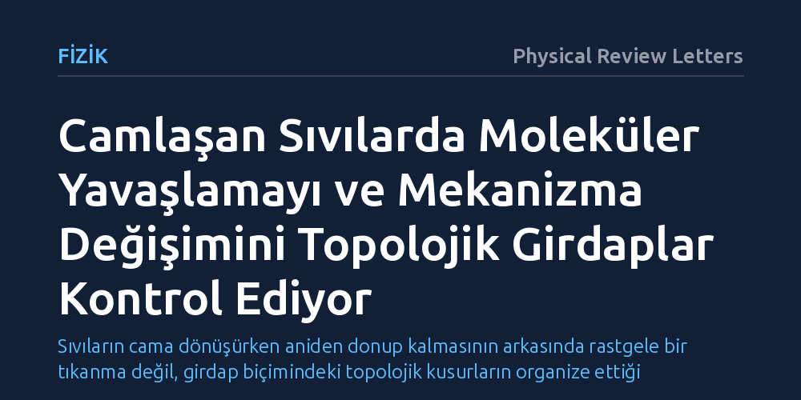

FIZIK · Physical Review Letters · 2026-10-15
Araştırmacılar, soğuyan sıvıların kristalleşmeden katılaşırken neden aniden yavaşladığını moleküler dinamik simülasyonlarıyla inceledi. Moleküler sıçramaların oluşturduğu topolojik girdapların kritik bir sıcaklıkta zirve yaparak bu yavaşlamayı ve gevşeme mekanizmasındaki değişimi tetiklediği bulundu.
Sıvıların cama dönüşürken aniden donup kalmasının arkasında rastgele bir tıkanma değil, girdap biçimindeki topolojik kusurların organize ettiği düzenli bir geçiş mekanizması olduğu anlaşıldı.

Pencerelerimizdeki camdan plastiklere kadar günlük hayatta sıkça kullandığımız pek çok malzeme, sıvı halden katı hale geçerken bilinen kristalleşme sürecini izlemez. Normalde bir sıvı donarken atomlar düzenli bir kafes yapısına yerleşir. Ancak cam oluşturan sıvılarda durum farklıdır; sıcaklık düştükçe moleküler hareketler öyle şiddetli ve beklenmedik bir biçimde yavaşlar ki, sıvı yapısı kristalleşmeye fırsat bulamadan düzensiz bir formda kilitlenip katılaşır. Bu dramatik yavaşlamanın altında yatan temel fiziksel mekanizmayı açıklamak, yoğun madde fiziğinin çözülememiş en büyük problemlerinden biri olarak kabul edilir.
Geleneksel fizikte sıcaklık azaldıkça moleküllerin hareketlerinin belirli bir üstel yasaya göre yavaşlaması beklenir. Oysa camlaşan sıvılarda bu yavaşlama, sıcaklık düştükçe beklentilerin ötesine geçen "süper-Arrhenius" adı verilen olağanüstü bir direnç sergiler. Moleküllerin birbirlerinin hareketini nasıl bu kadar sert bir şekilde kısıtladığı ve akışkanlığın aniden nasıl ortadan kalktığı bugüne kadar net bir matematiksel ve fiziksel temele oturtulamamıştı.
Araştırmacılar bu gizemi çözmek için fiziksel deneylerin mikroskobik çözünürlük sınırlarını aşarak kapsamlı moleküler dinamik simülasyonlarına başvurdu. Bu yöntemde, sıvı içerisindeki parçacıkların birbirleriyle yaptıkları etkileşimler ve zaman içerisindeki hareketleri Newton hareket denklemleri temelinde adım adım hesaplandı. Böylece sıvının soğuma sürecinde tek tek moleküllerin nasıl yer değiştirdiği doğrudan gözlemlenebilir hale getirildi.
Çalışmada özellikle moleküllerin kalıcı olarak yer değiştirmesini sağlayan sıçrama hareketleri haritalandırıldı. Her bir molekülün sıçrama yönünü ve büyüklüğünü gösteren yer değiştirme vektör alanları çıkarıldı. Araştırmacılar, bu vektör alanlarının içerisinde sıvı akışını andıran girdap yapılarının ve topolojik kusurların oluşup oluşmadığını inceledi ve bu kusurların yoğunluğunu farklı sıcaklıklarda hassas biçimde takip etti.
Elde edilen sonuçlar, sıvı içerisindeki yapısal rahatlamanın ve gevşemenin temel taşıyıcılarının bu sıçrama vektör alanlarındaki girdaplar olduğunu ortaya koydu. Şaşırtıcı olan bulgu ise bu girdapların yoğunluğunun doğrusal bir şekilde değişmemesiydi; sıvı soğutulurken mod-bağlaşım kritik sıcaklığı civarında girdap yoğunluğunun belirgin bir tepe noktasına ulaştığı saptandı.
Bu tepe noktası, sıvı içindeki gevşeme biçiminin temelden yön değiştirdiğini gösteriyor. Sıvı daha sıcakken moleküler hareketler küçük, yerel ve birbirine sıkıca bağlı girdap yapılarıyla gerçekleşirken; kritik sıcaklığın altına inildikçe bu kompakt yapılar yerini uzun erimli ve uzamış girdap çizgilerine bırakıyor. Girdap yoğunluğunun zirve yapıp ardından düşüşe geçmesine bir dizi topolojik faz geçişi eşlik ediyor ve bu geçişler sıvının akışkanlığını neredeyse tamamen durduran süper-Arrhenius yavaşlamasını doğrudan tetikliyor.
Bu çalışma, camlaşma sürecini yalnızca parçacıkların birbirine çarpıp sıkışması olarak gören yaklaşımların ötesine geçerek olaya topolojik bir zemin kazandırıyor. Topolojik kusurlar, fizik dünyasında genellikle sıvı helyumdaki süperakışkanlık veya ince filmlerdeki kuantum faz geçişleri gibi alanlarda incelenirken, ilk kez camlaşan sıvıların dinamik yavaşlamasıyla bu kadar doğrudan ilişkilendirilmiş oldu.
Yine de bu bulguların bilgisayar modellerine dayalı olduğunu ve gerçek malzemelerde test edilmeye muhtaç olduğunu unutmamak gerekiyor. Elde edilen mekanizma, farklı kimyasal yapıdaki camlarda ve laboratuvar koşullarında deneysel olarak doğrulanabilirse, hem malzeme biliminde daha dayanıklı cam ve amorf metal üretiminde hem de karmaşık düzensiz sistemlerin genel teorisinde önemli bir anlayış netliği sağlayacaktır.